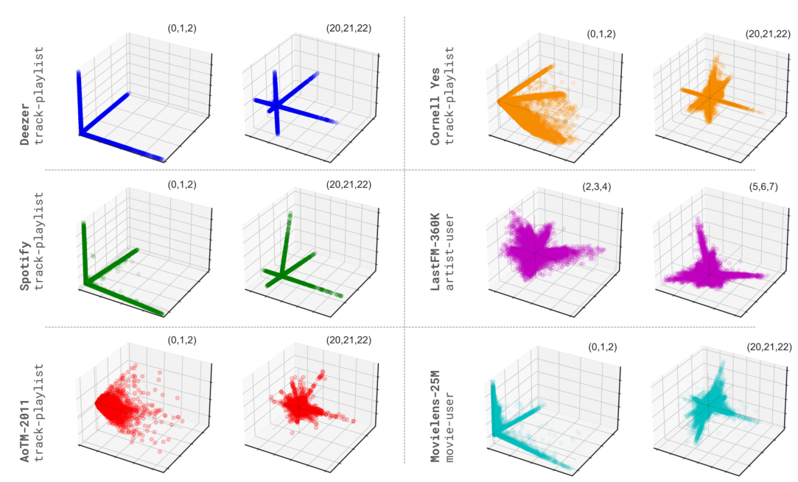

Of Spiky SVDs and Music Recommendation (论带尖峰的 SVD 与音乐推荐)
- 会议/期刊: RecSys 2023 (Singapore)
- 作者与机构: Darius Afchar, Romain Hennequin (Deezer Research)；Vincent Guigue (AgroParisTech, MLIA – Sorbonne Universités)
- 推荐链路定位: 召回（相似物品检索 / 通用物品嵌入）
- 研究方向: 协同过滤与双塔召回 / 图神经网络与知识图谱推荐
- 论文原文: https://arxiv.org/abs/2307.01212v1
- 开源代码: https://github.com/deezer/spiky_svd
TL;DR (1分钟核心速览)
本文针对一个被忽视但普遍存在的现象：在 6 个推荐数据集上用截断 SVD（PureSVD）得到的物品嵌入，会自发组织成过原点的“尖峰”射线。作者提出量化指标 \(\mathrm{Spk}\)（Deezer 上仅\(0.04\%\)的峰值点即可覆盖 50% 的嵌入），并首次证明反向命题：尖峰结构\(\Leftrightarrow\)带度异质性的社区模型 DCBM，从而把“余弦 vs. 点积”“截断维度\(f\)”“嵌入时效稳定性”三个工程盲点变成可推导结论。Deezer 12 期工业 SVD 实验显示：用点积时高范数物品一年后 top-500 邻域 Jaccard 仍 >80%，低范数则迅速失效。
Background & Motivation (背景与核心矛盾)
- 主流范式: 音乐推荐中，截断 SVD 依旧是相似物品检索与下游任务嵌入的强基线（神经网络 CF 在其上并无稳定增益），业界常用 \(U\)、\(U\Sigma\) 与余弦/点积的多种组合，但选择多凭经验。
- 前人局限: 其一，余弦归一化把所有点压到超球面，把范数信息整体抹除，导致尖峰结构长期“视而不见”；其二，社区检测文献（DCBM 谱分析）只证明了“DCBM \(\Rightarrow\) 尖峰”，并把尖峰当作需要修正的噪声，而非可利用的信号。
- 核心洞察 (Key Insight): 作者在高维切片投影中发现，嵌入点并非各向同性云团，而是极少数高范数峰值方向吸收了大部分点（图 1）；且尖峰在前若干主维度最清晰、在噪声主导的后维度退化为模糊云。
- 本文切入点: 先给尖峰一个可计算的定义与度量，再证明“尖峰 \(\Rightarrow\) 变度社区”的逆命题，最后用一条工业时间序列验证范数即“稳定性的代理量”。

Method (核心方法设计)
1. 整体框架 (Overall Architecture)
全文是一条“度量 → 证明 → 实践”的闭环，而非一个新的打分模型。预处理统一为：对交互矩阵取对称化 \(MM^{*}\)、按物品保留 top-\(k\)非零交互、施加 PPMI 归一化（该归一化与 skip-gram 负采样等价，同时抑制流行度偏差），随后做\(f\)维截断 SVD 并取\(E=U\Sigma\)作为物品嵌入。在嵌入空间上计算\(\mathrm{Spk}\)度量并观察尖峰；再用谱定理把\(E\)的行分解为“方向\(\times\)标量范数”，证明尖峰方向对应社区、范数对应社区内度，从而把 DCBM 参数从嵌入中读出；最后在 Deezer 跨 12 个时间戳的 SVD 上，按范数分桶检验 top-\(k\) 邻域的时序稳定性。
flowchart TD
A["交互矩阵 M（PPMI + top-k 截断）"] --> B["截断 SVD：E = UΣ"]
B --> C["尖峰度量 Spk：贪心峰值覆盖"]
B --> D["定理3.4：尖峰 ⇒ DCBM（α_i = ||e_i||）"]
D --> E["实践推论：余弦/点积选择、度估计、f 调参"]
E --> F["Deezer 12期嵌入：按范数分桶的 top-500 IoU 稳定性"]2. 关键设计拆解 (Key Designs)
-
尖峰度量 \(\mathrm{Spk}\)（把“看起来像射线”变成可比较的数）：痛点是高维下 kurtosis 一类统计量对超参极敏感且无自然多变量推广。作者按范数降序取候选峰\(e^{*}\)，若\(\cos(e^{*},e)>\cos\theta\)则视\(e\)属于该尖峰，贪心覆盖到比例\(\rho\)的点后停止（高维部分集合覆盖的启发式上界），最终\(\mathrm{Spk}=\#\{e^{*}\}/n\)。其直觉是：若极少的峰就能吞掉半个分布，说明分布高度共线；作者进一步把\(\mathrm{Spk}\)解读为社区数\(K\) 的近似估计。
-
定理 3.4（尖峰 \(\Leftrightarrow\)变度社区）：由 Lemma 3.3，\(U\)行成尖峰则\(U\Sigma^{p}\)与\(V\)的行同样成尖峰（仅方向旋转），故可固定\(E=U\Sigma\)。设\(e_i=\alpha_i s_{C(i)}\)，则对\(i,j\le n'\)： $\(\tilde{M}_{ij}=|(EV^{*})_{ij}|=\alpha_i\alpha_j\langle s_{C(i)},s'_{C(j)}\rangle,\quad \tilde{M}\propto K^{2}\cdot\mathrm{DCBM}\big((C(i))_{i\le n'};\,B;\,(\alpha_i/K)_{i\le n'}\big)\)$ 即“常数块矩阵”逐元素乘以秩 1 的 \([\alpha_i\alpha_j]\)，且\(\alpha_i=\|e_i\|\) 正是社区内度。解释力在于：矩阵稀疏时，用尽量多的秩 1 因子重建尽量多的社区比“用多个特征向量精修单个社区”更省误差，这解释了尖峰的普遍自发涌现。
-
训练目标、负采样与推理效率：本文无新损失函数，训练目标即 \(\min\|\hat{M}-M\|_F^{2}\)（Eckart–Young–Mirsky 最优），负采样被 PPMI 归一化隐含吸收（与负采样 skip-gram 等价）。推理零额外开销：\(\mathrm{Spk}\) 与度估计都直接在已有嵌入上做，无需显式构图；工业侧仅需一次分布式 RSVD。
Experimental Setup & Evaluation Protocol (实验设置与评估协议)
- 数据集与预处理: 6 个数据集覆盖歌单、播放、社交标签与电影场景；统一 top-\(k\)截断 + PPMI，\(f=128\)，\(E=U\Sigma\)。原文未给出各数据集的用户/物品/交互统计表（详见开源仓库），故下表只列场景与规模量级：
| 数据集 | #Users | #Items | #Interactions | 稀疏度/密度 | 特征/场景说明 |
|---|---|---|---|---|---|
| Deezer (私有) | — | 1.5M 曲目（跨 12 期公共交集） | PPMI 后对称矩阵，稀疏 | 极稀疏 | 工业 user–track 隐式反馈，12 期 SVD 跨 2022-05→2023-05 |
| Spotify Million Playlist | — | 百万级曲目 | playlist–track，稀疏 | 极稀疏 | 歌单共现，尖峰最清晰的公开集之一 |
| AoTM-2011 | — | 十万级 | playlist–track | 稀疏 | Art of the Mix 歌单 |
| Cornell Playlists | — | 万级 | playlist–track | 稀疏 | 学术歌单集合 |
| LastFM-360K | 360K 用户量级 | 艺术家级 | user–artist 标签 | 稀疏 | 社交/标签共现 |
| MovieLens-25M | 25M 评分量级 | 万级电影 | 密集于音乐集 | 相对更密 | 跨域佐证：电影数据同样出现尖峰 |
- 数据划分与防穿越 (Splitting Strategy): 无监督几何分析，不做训练/测试划分；第 4 节采用全局时间戳切分——以 2022-05 的 SVD 为参考嵌入，与后续 11 期（每 5 周一步）逐一比较，天然避免未来信息泄漏。
- 排名评测协议 (Ranking Protocol): 非标准 accuracy 评测。核心协议为：在每期 SVD 内，于约 30 万候选池中取参考嵌入的 top-500 相似物品（分别用余弦与点积），以 Jaccard / IoU 度量跨期邻域一致性；并额外以 \(\mathcal{N}(0,1)\)高斯采样（\(f\)维下随机向量几乎不可能共线）作为“无尖峰”参照下界。\(\mathrm{Spk}\)报告取\(\cos\theta=0.9\)、\(\rho=50\%\)。
- 对比基线与超参设置: 基线为不同截断维度 \(f\in\{16,32,64,128\}\)的 SVD 变体与高斯随机参照；关键超参为\(f\)、\(\theta\)、\(\rho\) 与相似度函数（余弦 vs. 点积）。
Key Experimental Results (实验关键数据)
1. 主实验对比 (Main Results)
\(\mathrm{Spk}\)越小表示尖峰越强（覆盖 50% 点所需的峰值比例，\(\cos\theta=0.9\)）：
| 变体 / 数据 | Deezer | Spotify | AoTM-2011 | Cornell | LastFM-360K | ML-25M | \(\mathcal{N}(0,1)\) |
|---|---|---|---|---|---|---|---|
| Spk@128 | 0.04% | 0.14% | 18.1% | 4.55% | 2.42% | 7.09% | 50% (=\(\rho\)) |
| Spk@64 | 150/n < 0.01% | 228/n < 0.03% | 11.4% | 1.59% | 0.49% | 3.05% | 50% |
| Spk@32 | 50/n < 0.01% | 55/n < 0.01% | 2.31% | 0.49% | 0.14% | 1.12% | 50% |
| Spk@16 | 23/n < 0.01% | 23/n < 0.01% | 0.93% | 0.09% | 0.06% | 0.02% | 49.4% |
| 含义（最优=最少峰） | 361 个峰覆盖半数百万级嵌入 | 1395 个峰覆盖半数嵌入 | 尖峰最弱 | 中等 | 中等偏强 | 中等 | 无结构（上界） |
2. 消融/敏感性分析 (Ablation & Sensitivity)
| 变化维度 | 设置 | 现象 | 结论 |
|---|---|---|---|
| 截断维度 \(f\) | \(f\): 16 → 128 | Deezer/Spotify 在低\(f\)时 150/n、228/n 级；Spotify 在\(f=128\)骤升至 0.14% | Deezer 取\(f=128\)、Spotify 取\(f=64\)才能捕获“干净社区”，\(\mathrm{Spk}\)可作选\(f\) 的离线指标 |
| 相似度函数 | 余弦 vs. 点积 | 点积的稳定性曲线分化最剧烈；余弦曲线被拉平 | 余弦≈球形聚类（抹掉 \(\alpha_i\)），点积保留社区内度 |
| 范数分桶（5 等分） | 低 → 高范数 | 点积下高范数 top-500 邻域近一年 IoU > 80%，低范数快速失效 | 范数是嵌入时效鲁棒性的强预测因子 |
| 维度位置 | 前若干主维 vs. 高索引维 | 前维尖峰锐利，后维退化为模糊云 | 与鲁棒 SVD “先结构后噪声”一致 |
3. 关键实验发现 (Key Findings)
- 尖峰是结构性而非数据集偶然：Deezer 用 0.04%、Spotify 用 0.14% 的峰值点即可覆盖 50% 的嵌入，而 128 维高斯随机点需要 50%（等于 \(\rho\) 上界），相差 2–3 个数量级，说明 SVD 嵌入几乎必然带有 DCBM 式块结构。
- \(\mathrm{Spk}\)的拐点即\(f\)的饱和点：Spotify 在\(f=128\)时\(\mathrm{Spk}\)从 228/n 暴涨到 0.14%，对应“噪声开始渗入、峰数随点数线性增长”；据此选\(f=64\)与 Deezer 的\(f=128\) 是数据驱动的调参依据，而非网格搜索。
- 范数决定时序稳定性：按范数五等分后，点积相似度下高范数物品一年后 top-500 邻域仍保持 80% 以上重合，低范数物品迅速漂移——这为“哪些嵌入需要高频重算、哪些可低频更新”提供了直接的成本分配准则。
Highlights & Limitations (亮点、对比与审稿批判)
- 与代表作对比 (vs. Prior Work): 与 PureSVD/EASE 类工作相比，本文不改打分函数，而是给出几何解释层；与 DCBM 谱聚类（Karrer & Newman 等）相比，本文证明的是被前人视为噪声而需修正的逆命题（尖峰 ⇒ DCBM），并允许 \(n'<n\)（部分点带噪），适用面更宽；与神经 CF 复现性研究相比，本文为“简单基线为何难被打败”补上了一块理论拼图。
- 可迁移亮点: ① 用 \(\mathrm{Spk}\)作为选择嵌入维度\(f\)的无监督离线指标，可直接迁移到双塔召回与语义 ID 码本维度选择；② 用\(\|e_i\|\) 作为节点度的免费估计与“重算优先级”信号，无需显式构图即可做增量更新调度。
- 审稿级局限批判: ① 结论建立在 \(M\)近似非负、块近似的秩 1 假设上，对 rank\(>1\)的社区结构明确“留待未来工作”，实际多兴趣用户场景可能失效；②\(\mathrm{Spk}\)是 NP-hard 覆盖问题的贪心上界，且对\(\theta,\rho\)敏感，跨数据集绝对值不可直接横比；③ 工业验证仅一条 Deezer 曲线、无线上 A/B 或召回准确率指标，且\(n'=\rho n\) 的假设把非尖峰点一律当噪声，可能丢弃有用信号。
Rating (四维评分)
- 方法创新性 (Novelty): ⭐⭐⭐⭐⭐ （把被余弦归一化掩盖的尖峰几何提升为一等公民，并首次证明“尖峰 ⇒ DCBM”的逆命题，理论增量清晰且非平凡）
- 评估协议与实验扎实度 (Protocol & Experiments): ⭐⭐⭐ （6 个数据集 + 高斯参照的几何验证有说服力，但全程无召回/排序准确率指标，工业部分仅单条时间序列、无显著性检验）
- 写作与数学规范度 (Clarity & Rigor): ⭐⭐⭐⭐ （引理—定理—推论的链条紧凑，符号统一；\(\mathrm{Spk}\) 的启发式性质与假设边界都主动交代，唯数据集统计表缺失略减分）
- 工业落地与复现价值 (Industrial & Practical Value): ⭐⭐⭐⭐ （代码开源、零额外推理开销，\(f\) 选择与嵌入更新调度两条结论可直接落到生产管线；但收益是“省成本/调参”而非“涨指标”）